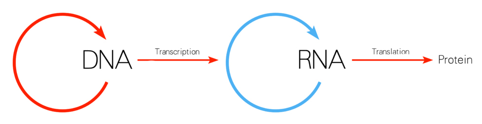
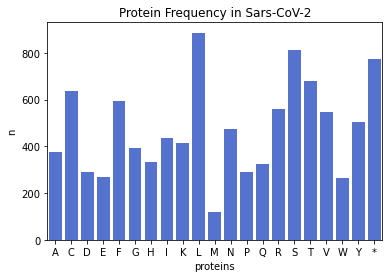

Comparitive Analysis
SARS-CoV-2, SARS, and MERS
from Bio import Phylo
from io import StringIO
handle = StringIO("(((SARS Tor2, SARS-CoV-2),(MERS)));")
tree = Phylo.read(handle, "newick")
Phylo.draw_ascii(tree)
______________________ Tor2
_____________________|
_____________________| |______________________ SARS-CoV-2
|
|_____________________ ______________________ MERS
from Bio.SeqUtils import GC
from Bio import SeqIO
gc_covid = [GC(rec.seq) for rec in SeqIO.parse('covid-19.fasta', 'fasta')]
gc_sars = [GC(rec.seq) for rec in SeqIO.parse('SARS.fasta', 'fasta')]
gc_mers = [GC(rec.seq) for rec in SeqIO.parse('MERS.fasta', 'fasta')]
[37.97277865097148]
[40.7616550704178]
[41.23642883229855]
from Bio import pairwise2
from Bio.pairwise2 import format_alignment
covid_seq = SeqIO.read('covid-19.fasta', 'fasta').seq
sars_seq = SeqIO.read('SARS.fasta', 'fasta').seq
mers_seq = SeqIO.read('MERS.fasta', 'fasta').seq
covid_sars_alignments = pairwise2.align.globalxx(covid_seq[0:100], sars_seq[0:100])
covid_mers_alignments = pairwise2.align.globalxx(covid_seq[0:100], mers_seq[0:100])
format_alignment(*covid_sars_alignments[0])
-ATTA-AAGGTTT-A-TAC-CTTCCCAGG-TAA-CAA--AC--CAACCAACTTTCGAT-CTCTTGT-AGAT-CT--G-TTCTCTAAACGAACTT---TAAAAT-C--TGTGTG----GCTGTCACTC--
||| || | | | || ||| || | | | || | || | ||| | |||||| ||| || | || | | ||||||||| ||||| | ||| || || || | ||
GATT-TAA-G--TGAATA-GCTT----GGCT-ATC--TCACTTC--CC--C--TCG-TTCTCTTG-CAGA-ACTTTGATT-T-T-AACGAACTTAAATAAAA-GCCCTGT-TGTTTAGC-GT-A-TCGT
Score = 71
format_alignment(*covid_mers_alignments[0])
ATTAA--AGGTTTAT-ACCTT-CCCAGGTAACAAA-CCAACCAACTT-TCGATCTCTTGTAGATCTGTTCTCTAAACGAACTTTAAAATCTGTGTG-GCTGTCA-CTC---
| | | |||||| | ||| | |||||| | ||| ||||||||| ||||||||||||||||||||||||||||||||||||||||||||||| |||||| |||
A-T-ATTAGGTTT-TTACC-TACCCAGG--A-AAAGCCAACCAAC--CTCGATCTCTTGTAGATCTGTTCTCTAAACGAACTTTAAAATCTGTGT-AGCTGTC-GCTCGGC
Score = 89

covid_mRNA = covid_seq.transcribe()
covid_protein = covid_mRNA.translate()
sars_mRNA = sars_seq.transcribe()
sars_protein = sars_mRNA.translate()
mers_mRNA = mers_seq.transcribe()
mers_protein = mers_mRNA.translate()
from collections import Counter
covid_protein_freq = Counter(covid_protein)
sars_protein_freq = Counter(sars_protein)
mers_protein_freq = Counter(mers_protein)
from matplotlib import pyplot as plt
from matplotlib import pylab
plt.bar(covid_protein_freq.keys(), covid_protein_freq.values())
plt.xlabel('Proteins')
plt.ylabel('n')
plt.title('Protein Frequency in Covid-19')
plt.bar(sars_protein_freq.keys(), sars_protein_freq.values())
plt.xlabel('Proteins')
plt.ylabel('n')
plt.title('Protein Frequency in SARS')
plt.bar(mers_protein_freq.keys(), mers_protein_freq.values())
plt.xlabel('Proteins')
plt.ylabel('n')
plt.title('Protein Frequency in MERS')

from Bio.SeqUtils import molecular_weight
molecular_weight(covid_seq)
molecular_weight(sars_seq)
molecular_weight(mers_seq)
9241219.214400413
9192097.564700488
9299088.414500311
def dot_plot(seq1, seq2, **kwargs):
data = [
[
(seq1[i:i+1] != seq2[j:j+1])
for j in range(len(seq1)-1)
]
for i in range(len(seq2)-1)
]
title = kwargs.pop('title')
xlabel = kwargs.pop('xlabel')
ylabel = kwargs.pop('ylabel')
pylab.imshow(data)
pylab.title(title)
pylab.xlabel(xlabel)
pylab.ylabel(ylabel)
pylab.show()
short_covid_seq = covid_seq[0:100]
short_sars_seq = sars_seq[0:100]
short_mers_seq = mers_seq[0:100]
dot_plot(
short_covid_seq, short_sars_seq,
xlabel='Covid-19',
ylabel='SARS',
title='Covid-19 vs. Sars \n (first 100 bp)'
)
dot_plot(
short_covid_seq, short_mers_seq,
xlabel='Covid-19',
ylabel='MERS',
title='Covid-19 vs. Mers \n (first 100 bp)'
)
import py3Dmol
view1 = py3Dmol.view(query='pdb:6LU7')
view1.setStyle({'cartoon': {'color': 'spectrum'}})
view1.png()
view2 = py3Dmol.view(query='pdb:2OG3')
view2.setStyle({'cartoon': {'color': 'spectrum'}})
view2.png()
view3 = py3Dmol.view(query='pdb:6PXH')
view3.setStyle({'cartoon': {'color': 'spectrum'}})
view3.png()
SARS-CoV-2
SARS
MERS
References
PDB ID:
Jin, Z., Du, X., Xu, Y., Deng, Y., Liu, M., Zhao, Y., Zhang, B., Li, X., Zhang, L., Peng, C., Duan, Y., Yu, J., Wang, L., Yang, K., Liu, F.,
Jiang, R., Yang, X., You, T., Liu, X., Yang, X., Bai, F., Liu, H., Liu, X., Guddat, L.W., Xu, W., Xiao, G., Qin, C., Shi, Z., Jiang, H., Rao, Z., Yang, H.
(2020) Nature 582: 289-293
PDB ID:
Saikatendu, K.S., Joseph, J.S., Subramanian, V., Neuman, B.W., Buchmeier, M.J., Stevens, R.C., Kuhn, P.
(2007) J Virol 81: 3913-3921
PDB ID:
Wang, N., Rosen, O., Wang, L., Turner, H.L., Stevens, L.J., Corbett, K.S., Bowman, C.A., Pallesen, J., Shi, W., Zhang, Y., Leung, K.,
Kirchdoerfer, R.N., Becker, M.M., Denison, M.R., Chappell, J.D., Ward, A.B., Graham, B.S., McLellan, J.S.
(2019) Cell Rep 28: 3395-3405.e6